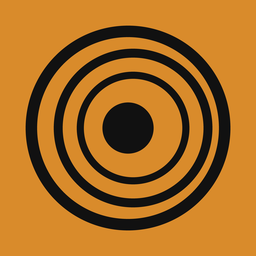

Cupped
Her fincan bir damak kimliği
Kahve içenler için bir damak günlüğü. Fincanını saniyeler içinde kaydet, skorunu gör, damak tipini keşfet ve pasaportunu damgalarla doldur.
Yakında App Store'da☕ Fincanını kaydet
Fotoğrafını çek, yöntemi ve yeri seç. İstersen tat notları, menşe, gram ve öğütme gibi ayrıntıları da ekle.
⭐ Fincan skoru
Her fincan emek, keşif ve derinliğe göre bir skor alır. Yeni bir kafe ya da yöntem denemek skorunu yükseltir.
🧭 Damak tipin
Meyve Kaşifi mi, Klasik Usta mı? İçtiklerine göre damak tipin ortaya çıkar ve zevkin değiştikçe o da değişir.
🛂 Damak pasaportu
Denediğin her yöntem bir damga, her damak tipi bir vize. Mekanların ve rozetlerin de burada.
🔥 Seri ve özetler
Günlük serini koru, haftalık ve aylık özetini izle. Yıl sonunda tüm fincanların Fincan Duvarı'nda.
📱 Widget'lar
Ana ekranda ve kilit ekranında serin, Fincan Duvarın, son fincanın ve günlük kafeinin. Kontrol Merkezi'nden tek dokunuşla kahve ekle.
🤝 Paylaş
Fincan ve Damak Kartını Instagram, WhatsApp ve diğer uygulamalarda paylaş; damak kodunla arkadaşlarınla uyumuna bak.
🔒 Önce gizlilik
Hesap yok, sunucu yok. Fincanların ve fotoğrafların yalnızca telefonunda kalır; istediğin zaman dışa aktar ya da sil.
Destek
Soru, öneri ya da bir sorun mu var? Bize yaz: beratyapar4@gmail.com
Verilerini yeni telefona taşımak için: Ayarlar › Verilerimi dışa aktar, sonra yeni telefonda Ayarlar › Yedekten geri yükle.